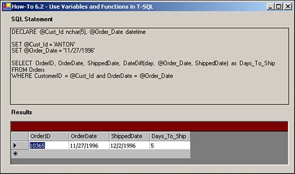

Note
Besides the standard SQL Server data types, such as nchar, int, and datetime, you can also declare and create a Table datatype. You will see an example of this in How-To 6.8, found later in this chapter. |
I understand that I can use parameters in my stored procedures, but how do I use variables and functions within T-SQL?
It is time to expand the coding you do using T-SQL. In this book so far, you have pretty well been limited to single-line SELECT statements. Now you will learn how to use variables and built-in functions. To achieve this, look at the routine that will be created here:
DECLARE @Cust_Id nchar(5), @Order_Date datetime SET @Cust_Id = 'ANTON' SET @Order_Date = '11/27/1996' SELECT OrderID, OrderDate, ShippedDate, DateDiff(day, @Order_Date, ShippedDate) as Days_To_Ship FROM Orders WHERE CustomerID = @Cust_Id and OrderDate = @Order_Date
You can use variables in T-SQL much like you would in your other coding languages. First, you must declare them. To declare variables in T-SQL, you will use the DECLARE statement, the ampersand with the variable name, and the data type. You can see an example of the variable declaration here, where nchar, with the length and datetime variables, is declared.
DECLARE @Cust_Id nchar(5), @Order_Date datetime
Note
Besides the standard SQL Server data types, such as nchar, int, and datetime, you can also declare and create a Table datatype. You will see an example of this in How-To 6.8, found later in this chapter. |
After you have declared the variables, you need to initialize them before you can use them.
To initialize the variables, you will use the SET command, shown in these two lines of code:
SET @Cust_Id = 'ANTON' SET @Order_Date = '11/27/1996'
By setting the initial values, you are then ready to use the variables within the rest of your procedure, any way that you need them, again, by using the @varname syntax.
Within T-SQL, you can also use functions to perform some of the tasks needed, just as you do within Visual Basic. Not all of the functions are the same, nor are there necessarily as many. For instance, instead of a Date() function, which is used in Visual Basic, in T-SQL, you use the GetDate() function. Functions also will not necessarily return the same values or accept the same parameters.
This How-To calls the DateDiff() function. As with Visual Basic's DateDiff() function, this function takes two dates, and based on the interval requested, it returns the difference between the two. To check out other functions that are available, you can look up the word function in the Books On-Line for SQL-SQL Server.
Open and run the Visual Basic .NET-Chapter 6 solution. From the main page, click on the button with the caption How-To 6.2. When the form loads, you will see a SQL statement display in a label, and a DataGrid displayed below (see Figure 6.3).
Create a Windows Form. Then place the controls listed in Table 6.2 and seen in Figure 6.3 with the following properties set.
|
Object |
Property |
Setting |
|---|---|---|
|
Label |
Text |
SQL Statement |
|
Label |
Name |
lblSQLString |
|
Label |
Text |
Results |
|
DataGrid |
Name |
dgResults |
Add the code in Listing 6.2 to the Load event of the form. (Double-click on the form to bring up the code.) Creating the T-SQL routine described in the "Technique" section, this code then assigns the routine to the Text property of the Label called lblSQLString. It then creates a data adapter using the string and fills the dtResults DataTable. Last, the code assigns the data adapter as the data source for the dgResults data grid.
Private Sub frmHowTo6_2_Load(ByVal sender As System.Object,
ByVal e As System.EventArgs) Handles MyBase.Load
'-- Build the SQL String
Dim strSQL As String
strSQL = "DECLARE @Cust_Id nchar(5), @Order_Date datetime " & _
vbCrLf & vbCrLf
strSQL &= "SET @Cust_Id = 'ANTON'" & vbCrLf
strSQL &= "SET @Order_Date = '11/27/1996'" & vbCrLf & vbCrLf
strSQL &= "SELECT OrderID, OrderDate, ShippedDate, "
strSQL &= "DateDiff(day, @Order_Date, ShippedDate) as Days_To_Ship "
strSQL &= "FROM Orders" & vbCrLf
strSQL &= "WHERE CustomerID = @Cust_Id and OrderDate = @Order_Date"
'-- Store the SQL String
Me.lblSQLString.Text = strSQL
'-- Use the SQL String to build the data adapter and fill the data table.
Dim odaResults As New OleDb.OleDbDataAdapter(Me.lblSQLString.Text,
BuildCnnStr("(local)", "Northwind"))
Dim dtResults As New DataTable()
Try
odaResults.Fill(dtResults)
Catch excp As Exception
MessageBox.Show(excp.Message)
Exit Sub
End Try
'-- Assign the data table to the data grid's DataSource property
Me.dgResults.DataSource = dtResults
End Sub

For the most part, you will use parameters when you are creating your T-SQL routines. However, when you're creating multiple steps in your routines that are getting more complex, you'll use variables more often.